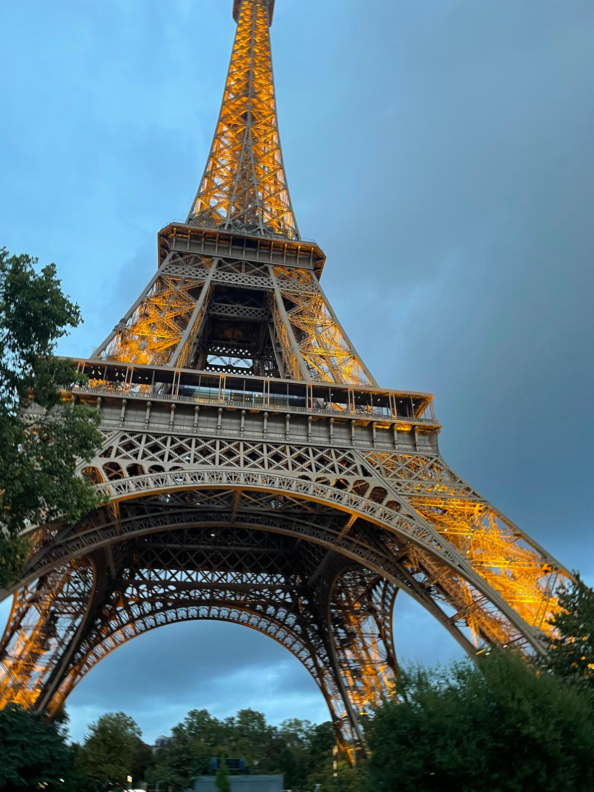

Der Eiffelturm
Der Eiffelturm ist eines der bekanntesten Wahrzeichen der Welt und ein Symbol von Paris. Hier sind die wichtigsten Informationen auf einen Blick:
Allgemeine Fakten zum Eiffelturm
Name:
Eiffelturm (französisch: Tour Eiffel)
Standort:
Paris, Frankreich (7. Arrondissement, Champ de Mars)
Eröffnung
31. März 1889
Architekt:
Gustave Eiffel und sein Ingenieurbüro
Höhe:
330 Meter (inklusive Antenne)
